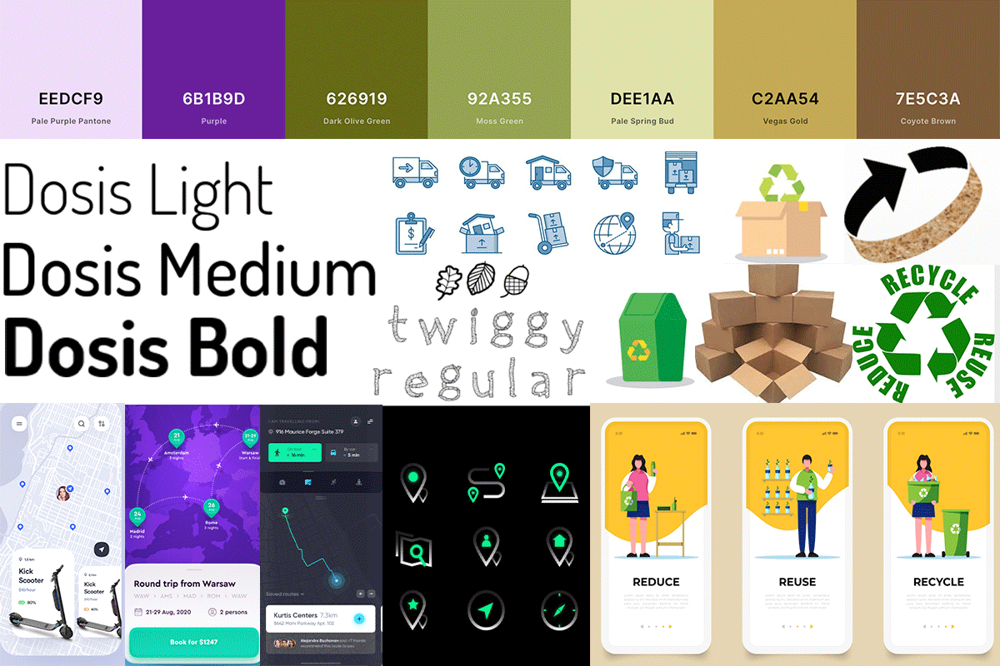

Shipback Mobile App
Created with HTML, CSS, JS & cache.manifest
For this project, I created a mobile app prototype of my idea, Shipback.
The Concept
'Shipback' is an idea I have where users can send the cardboard boxes used to ship them products back the the companies. In doing so, they can earn credit and discount codes for their future purchases, and track the environmental impact they have on Carbon Emissions. At this point, I imagine there could be drop off locations for users to leave thewir boxes in and they will be sent back to the companies.
This app prototype shows the part of the app that teaches users about shipback and offers a quick quide to help them properly send their boxes back.
The Design Phase
The design of this app was inspired by an earthy color scheme and box iconography. Originally, I was thinking of creating the map page of this app that shows local drop off locations, but that functionality would have reached beyond the scope of this project. Here is a moodboard of the design elements I used and was inspired by:
The Development Phase
You can view my code for this project in my Github Repository.
I coded this mobile app using HTML, CSS, Javascript, and Cache.manifest to enable offline use. The main functionality of my app is in the modal feature. This modal guides users through questions to evaluate their box before sending it back. Using JavaScript, I was able to code a function that looped through the content depending on which buttons the user clicks.
Another fun feature I added was in the browser view of the app. Because this is a mobile app, users download it from a website, which prompts them to add the app to their homescreen. On this page I coded an animation that makes the Shipback logo driving across the screen.
Overall, I am pleased with the way my mobile app turned out. It offers clear information about my idea as well as an important guide to inform users on the requirements for the service. I was able to successfully code this prototype as a mbile app for IOS, which users can download to their homescreen and use without being connected to the internet.